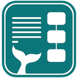
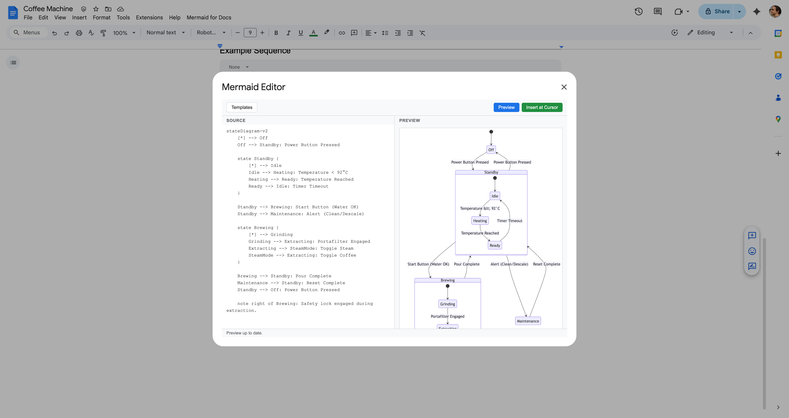
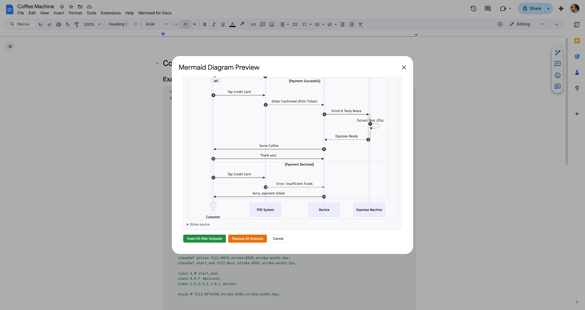
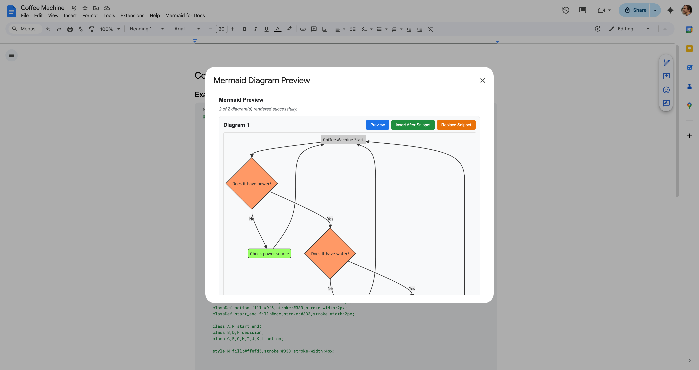
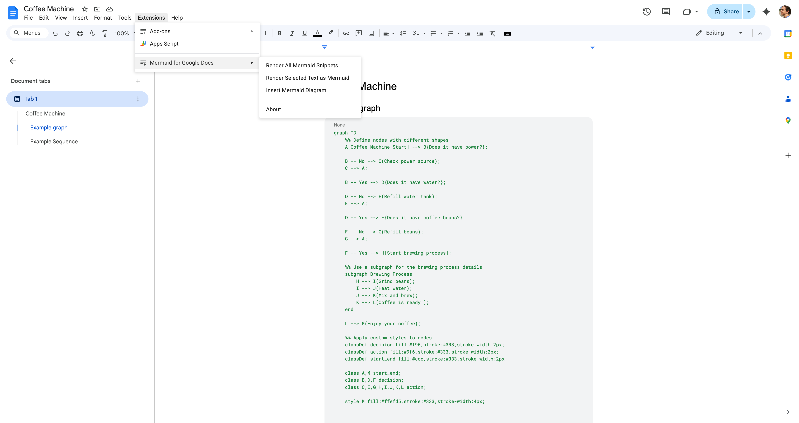

Mermaid for Google Docs™
Render Mermaid diagrams as images directly in Google Docs™. Client-side rendering — no data leaves your browser.
Install from Google Workspace™ MarketplaceFeatures
- Auto-detect & render — Finds Mermaid code snippets in your document and renders them as high-quality images
- Live editor — Side-by-side editor with real-time preview, syntax highlighting, and starter templates
- Insert or replace — Insert rendered diagrams after code snippets, or replace the code blocks entirely
- Template library — Quickly start with flowcharts, sequence diagrams, class diagrams, and more
- 100% client-side — All rendering happens in your browser via mermaid.js. No data is sent to any server
Screenshots




How to Use
Render existing Mermaid code
- In your Google Doc, insert a code block: Insert → Building blocks → Code block
- Write your Mermaid syntax inside the code block
- Go to Extensions → Mermaid for Docs → Render All Mermaid Snippets
- A preview dialog shows each detected diagram — click Insert or Replace
Important: The first line of your code block must be a diagram type keyword (e.g.
graph TD, sequenceDiagram, erDiagram). Comments (%%) are fine after the first line, but a comment on the very first line will prevent the snippet from being detected.
Use the built-in editor
- Go to Extensions → Mermaid for Docs → Insert Mermaid Diagram
- Write or paste Mermaid syntax in the left panel
- See the live preview on the right
- Pick a template from the dropdown to get started quickly
- Click Insert into Document when you're happy with the result
Supported Diagram Types
The add-on detects code blocks that start with any of these keywords:
| Diagram | Keyword |
|---|---|
| Flowchart | flowchart / graph |
| Sequence Diagram | sequenceDiagram |
| Class Diagram | classDiagram |
| State Diagram | stateDiagram |
| ER Diagram | erDiagram |
| Gantt Chart | gantt |
| Pie Chart | pie |
| Git Graph | gitGraph |
| User Journey | journey |
| Mindmap | mindmap |
| Timeline | timeline |
| Sankey | sankey |
| XY Chart | xychart |
| Block Diagram | block-beta |
| Packet Diagram | packet-beta |
| Quadrant Chart | quadrantChart |
| Requirement Diagram | requirementDiagram |
| ZenUML | zenuml |
| C4 Diagrams | c4context / c4container / c4component / c4dynamic / c4deployment |
See the mermaid.js docs for syntax details on each type.